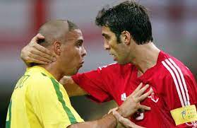
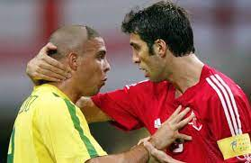

Hakan Şükür (d. 1 Eylül 1971, Sakarya), Türk futbolcu, futbol yorumcusu ve siyasetçidir. 11 Nisan 2011 tarihinde Adalet ve Kalkınma Partisinden, İstanbul 3. bölge, 4. sıradan milletvekili adayı oldu ve 11 Haziran 2011'de yapılan seçimde milletvekili seçildi. Hakan Şükür, futbola 1987 yılında, doğup büyüdüğü şehrin takımı Sakaryaspor'da başladı. Burada geçirdiği üç sezon ve yaşadığı bir Türkiye Kupası şampiyonluğunun ardından 1990'da Bursaspor'a transfer oldu. 1992 yılında Galatasaray ile sözleşme imzaladı. Galatasaray'da iki sezon üst üste Süper Lig, Başbakanlık Kupası ile Türkiye Spor Yazarları Derneği Kupası şampiyonluğu yaşadıktan sonra 1995'te, Serie A ekiplerinden Torino ile anlaştı. 4 aylık Torino kariyerinin ardından, aynı yıl içerisinde Galatasaray'a geri döndü. Takımın, dört yıl üst üste Süper Lig şampiyonluğu, üç yıl üst üste Türkiye Spor Yazarları Derneği Kupası şampiyonluğu, üç Türkiye Kupası ve 2000'de kazanılan UEFA Kupası şampiyonluklarında pay sahibi oldu. 2000 yılında yeniden İtalya'ya transfer olan Hakan, 2000-01 sezonunda Inter, 2001-02 sezonunda ise kiralık olarak Parma formalarını giydi. Aynı sezon Parma ile Coppa Italia'nın sahibi oldu. 2002 yazında, eski takım arkadaşı Tugay Kerimoğlu'nun da formasını giydiği Premier League ekiplerinden Blackburn Rovers'a transfer oldu. Fakat sezonun 9. maçının ardından ağır bir şekilde sakatlanması sebebiyle Blackburn ile sadece 9 maça çıkabildi. Sezon sonunda kulüp tarafından serbest bırakıldı ve bunun üzerine tekrar Galatasaray'a döndü. Burada iki Süper Lig ve bir Türkiye Kupası şampiyonluğu yaşayan Şükür, 2008'de futbolculuğu bıraktığını açıkladı. Çeşitli yaş gruplarındaki millî takımlarla Türkiye'yi temsil eden Hakan Şükür, Türkiye U-21 millî takımıyla 1993 Akdeniz Oyunları'nda altın madalya kazandı. A millî takım formasıyla ilk maçına 1992'de, Bursaspor oyuncusuyken çıkan Hakan; 1996 ve 2000 Avrupa şampiyonaları ile 2002 FIFA Dünya Kupası'nda mücadele etti. 2002 FIFA Dünya Kupası'nda bronz madalyanın sahibi olan ve üçüncülük maçında 10,8 saniyede kaydettiği golle FIFA Dünya Kupası tarihinin en erken golünü atan Hakan Şükür; 2007'ye kadar giydiği formayla çıktığı 112 maçta 51 gol kaydederek, Türkiye formasıyla en çok gol atan oyuncu unvanının da sahibi oldu. Şükür, 249 golle Süper Lig'de en çok gol atan oyuncu ve 38 golle Avrupa kupalarında en çok gol atan Türk futbolcu unvanlarına da sahiptir. 1996-97, 1997-98, 1998-99 sezonlarında sahip olduğu Süper Lig gol krallıklarıyla birlikte, 2004 yılında son 50 yılın en fazla dikkat çeken Türk futbolcusu olarak UEFA Jübile Ödülü'nün sahibi oldu.[1][2] İlk yılları Hakan Şükür; Arnavut kökenli olan Priştine, Kosova göçmeni Sermet Şükür[3] ve Üsküp, Makedonya göçmeni Nermin Şükür'ün[4] ikinci çocuğu olarak, Sakarya'nın Sapanca ilçesinde doğdu.[5][6][7] Gerçek doğum tarihi 29 Temmuz 1971 olmasına rağmen, nüfus kaydı 1 Eylül 1971'de yaptırılabildi.[6][8] İlk öğrenimini Ahmet Akkoç İlköğretim Okulu'nda tamamladı.[9] Bu sıralarda okulun basketbol takımında oynayan Şükür;[8] babası Sermet Şükür'ün de etkisiyle futbola 10 yaşında, doğup büyüdüğü şehrin takımı olan Sakaryaspor'un altyapısında başladı. Burada çeşitli mevkilerde forma giydi.[10][11] Kulüp kariyeri Türkiye Ligi tarihinde 249 golle en çok gol atan futbolcu olan Hakan Şükür, lig tarihindeki ilk golünü 1988-1989 sezonunda Eskişehirspor'a, 100. golünü 1996-1997 sezonunda Altay'a, 200. golünü 2003-2004 sezonunda Samsunspor'a, son golünü ise 2007-2008 sezonunda Hacettepe (Gençlerbirliği Oftaş)'a atmıştır. 3 kez gol kralı olan Hakan Şükür, 3 kez de asist kralı olmuştur. Türkiye Ligi tarihinde 8 şampiyonluk yaşayan Hakan Şükür, Bülent Korkmaz ve Suat Kaya ile birlikte en fazla şampiyonluk yaşayan futbolcu olmuştur. Hakan Şükür profesyonel kariyerinde sadece bir kez kırmızı kart görmüştür. Ona bu kartı 26 Mart 2004 tarihindeki Samsunspor maçında Bülent Uzun göstermiştir. Sakaryaspor Hakan Şükür, 1986-87 sezonunda Sakaryaspor'da profesyonel oldu. Kulübüyle ilk maçına 28 Ocak 1987'de, Türkiye Kupası beşinci tur mücadelesinde Denizlispor karşısında çıktı.[9] Takımıyla ikinci maçına yine kupada çıkan Şükür, 27 Nisan 1988'de Zonguldakspor ile oynanan maçta, durum 4-0 iken oyuna girdi ve kariyerindeki ilk resmî golünü kaydederek takımının sahadan 5-0'lık galibiyetle ayrılmasında rol oynadı.[12][13] Aynı sezon ligde üç, kupada ise iki maçta forma giydi. Sakaryaspor, sezon sonunda ligi 11. sırada tamamlarken, tarihindeki ilk Türkiye Kupası şampiyonluğunu yaşadı.[14] Böylece Şükür, ilk profesyonel olduğu sezonda ilk kupasını kazanmış oldu. Ertesi sezon; 26 Şubat 1989'da Eskişehirspor ile oynanan ve 2-1 devam eden maçta, lig tarihindeki ilk golünü attı ve skorda eşitliği sağladı.[15] Sezon boyunca ligde 11 maça çıkan Şükür; Adanaspor,[16] Fenerbahçe,[17] Konyaspor[18] ve Rizespor[19] maçlarında birer gol kaydetti. Takım ise ligi 10. sırada tamamlamıştı. 1989-90 sezonunda ise 27 maçta forma giyen Şükür; Boluspor,[20] Bursaspor,[21] Adana Demirspor,[22] Fenerbahçe[23] ve Trabzonspor[24] maçlarında olmak üzere ligde beş gol attı. Sezon sonu takımının ligi sonuncu tamamlayıp küme düşmesi üzerine, 5 Haziran 1990'da Bursaspor ile 600 milyon lira karşılığında sözleşme imzaladı.[25] Bursaspor 26 Ağustos 1990'daki 3-0 kaybedilen Sarıyer maçında, ligde ilk kez Bursaspor formasını giydi.[26] Ligde oynadığı ilk on maç boyunca gol kaydedemeyen Şükür, 2 Aralık 1990'da Zeytinburnuspor ile oynanan ve 2-1 kaybedilen maçta takımının tek golünü kaydetti.[27] Sezon boyunca ligde görev aldığı 27 maçta dört gol kaydederek Bursaspor'un ligi 8. sırada bitirmesinde pay sahibi oldu. 1991-92 sezonunda takımın başına Yılmaz Vural'ın gelmesiyle takımın performansı da giderek yükselmeye başladı. Sezon sonunda ligi 6. sırada bitiren ve Türkiye Kupası'nda final oynayan Bursaspor'da geçen sezon olduğu gibi 27 lig maçında forma giyen Şükür, ligde 7 kez ağları havalandırırken; 8 gollü Mümün Kaşmer'in ardından takımın en golcü ikinci oyuncusu oldu. Kupada ise oynadığı 7 maçta 3 gole imza attı. 1 Mart 1992'de, 2-2 biten Trabzonspor maçında takımının iki golünü atarak kariyerinde ilk kez bir maçta iki gol atmış oldu.[28] 21 Mayıs 1992'de, Fenerbahçe ile oynanan Başbakanlık Kupası maçında attığı golle takımının 3-1'lik galibiyetinde pay sahibi oldu ve kariyerinin ikinci kupasını kaldırdı.[29] Aynı sezon Galatasaray ile transfer görüşmelerine başladı. Türkiye'nin, 25 Mart 1992'de Lüksemburg ile oynadığı maç öncesi, kaldığı otelde Galatasaraylı yöneticilerle görüşen Şükür; takımla prensip anlaşmasına vardı.[30] 1 Haziran 1992'de, Konyaspor'dan Suat Kaya ile birlikte Galatasaray ile iki yıllık sözleşme imzaladı.[31] Galatasaray Şükür, Galatasaray formasıyla ilk resmî maçına, 12 Ağustos 1992'de, Beşiktaş ile oynanan ve 3-2 kazanılan Türkiye Spor Yazarları Derneği Kupası yarı finalinde çıktı.[32] 4 gün sonra Fenerbahçe ile oynanan final maçının 3. dakikasında açılış golünü kaydeden Şükür'lü Galatasaray, rakibini 3-2 mağlup ederek sezonun ilk kupasının sahibi oldu.[33] 23 Ağustos 1992'de ise 3-0 kazanılan Gençlerbirliği karşısında yeni formasıyla ligdeki ilk maçına çıktı.[34] İlk haftalarda millî takımda gösterdiği performansı kulübünde gösteremediği ve gol sıkıntısı çektiği yönünde eleştiriler alsa da[35] 26 Eylül 1992'de, Kayserispor ile oynanan ve 1-1 sona eren ligdeki dördüncü maçında ilk golünü kaydetti.[36] Ertesi hafta oynanan 1-1'lik Trabzonspor maçında da takımının tek golünü atan Şükür,[37] teknik direktör Karl-Heinz Feldkamp'ın takımda genç oyunculara yer vermesiyle ilk sezonunda ligde 30 maçta görev aldı ve 19 gol kaydetti. Torino Millî takımın İtalya'da kamp yaptığı dönemde Türk futbolunda yeni parlayan bir yıldız olan Hakan, İtalyan menajerlerce izleniyordu. Görüşmeler sonucu 1995 yılının Haziran ayında Serie A'da orta sıralarda yer alan Torino takımı ile anlaşıldı. Takımın forvet mevkiinde oynayan Şükür, yaz döneminde başarılı bir hazırlık kampı geçirdi ve takımla çıktığı yedi hazırlık maçında altı gol attı. Torino'daki ilk resmî maçına 27 Ağustos'ta sezonun ilk maçı olan Fiorentina deplasmanında çıktı. Ancak daha ligin ilk yarısı sona ermeden dört yıllık sözleşmesi bulunmasına karşın kendi isteğiyle Galatasaray'a geri döndü.[38] Torino'da gösterdiği performans nedeniyle bir dönem taraftarlar arasında Torinolu Şaban lakabıyla anıldı.[39][40] Galatasaray (2. dönem) Hakan Şükür Hakan Şükür, teknik direktör Greame Souness'in de istediği transfer sonucu yaklaşık dört ay sonra Ekim 1995'te Galatasaray'a geri döndü. 1995-96 sezonunda dokuzuncu haftadaki Fenerbahçe maçından itibaran sezon sonuna kadar takımın bütün karşılaşmalarında ilk 11'de maça başladı. Takım ise sezonu Türkiye Kupası'nı kazanarak bitirdi.[41] 1996-1997 sezonunda takımın teknik direktörlüğünü daha önce Türkiye millî takımını çalıştıran Fatih Terim yapmaya başladı.[42] Futbol kariyerindeki en başarılı sezonu bu sezonda yaşayan Şükür, yaşayacağı gol krallıkları ile bu sezondan itibaren "Kral" lakabıyla anılmaya başlanacaktı. 27 Ekim 1996 tarihinde Galatasaray'ın 8-1 galibiyetiyle biten Altay deplasman maçının 48. saniyesinde ligdeki 100. golünü attı.[43] Galatasaray formasıyla 39 maçta 48 gol attı. Ligde attığı 38 golle ligin gol kralı olan Şükür,[44] Metin Oktay'la birlikte, 39 gole sahip Tanju Çolak'tan sonra bir sezonda en fazla gol atan ikinci futbolcu oldu.[45] Cumhurbaşkanlığı Kupası'nda Kocaelispor karşısında attığı golle toplamda 5 gole ulaşarak kupa tarihinde en çok gol atan futbolcu oldu.[45] Ligdeki 38 golü ile Avrupa gol krallığı Altın Ayakkabı yarışında üçüncü olan Şükür, daha önce birinci ve üçüncü olan Tanju Çolak'tan sonra ödül alan ikinci Türk futbolcu oldu.[46][47] Kulüp başarısının yanı sıra millî takım formasıyla San Marino karşısında attığı golle toplamda 22 gole ulaşarak millî takımın yeni gol kralı oldu.[48] Sezon sonunda Bayern Münih ve Atlético Madrid'den transfer teklifi alsa da takımda kalan Hakan Şükür,[49][50] Hong Kong'un İngiltere'den Çin'e devredilişinin anısına düzenlenen maça FIFA tarafından davet edildi ve Dünya Karması kadrosunda oynadı.[51] Bu sezondan itibaren 4 yıl boyunca Lig şampiyonluğunun ve 2000 yılında UEFA Kupası'nın kazanılmasında en büyük katkıyı yapan futbolculardan biriydi. 1997-1998 sezonuna Galatasaray, Şükür'ün sakatlığı nedeniyle oynayamadığı hazırlık maçında Türkiye Spor Yazarları Derneği Kupası'nı kazanarak başladı.[52] Hakan Şükür ise Monako ile Ali Sami Yen Stadyumu'ında oynanan sezon açılışı maçında 2 gol atarak sezona başladı. 13 Ekim 1997 tarihinde ırkçılığı protesto amacıyla Dünya Profesyonel Futbolcular Birliği tarafından Madrid'de düzenlenen Dünya karması maçında forma giydi ve iki gol attı.[53] Bu maçtan kısa bir süre sonra Deportivo'ya transfer olacağını açıklasa da takımda kaldı.[54] Ligin ilk yarısında formsuz bir gürüntü sergilemiş olsa da ilk yarıyı 15 golle gol kralı olarak tamamladı.[55] Uluslararası Futbol Tarihi ve İstatistikleri Birliği tarafından Dünya'da 1997 yılının en iyi golcüsü seçilen Şükür, 12 Ocak 1998 tarihinde Almanya'nın Rothenburg kentinde düzenlenen törenle Klaus Fischer'in elinden ödülünü aldı.[56][57] Devre arasında Deportivo Galatasaray kulübüne Hakan Şükür'ün transferi için 8 milyon Dolar (1,7 trilyon TL) önerse de kulüp yönetimi ve Şükür bu teklifi reddetti.[58] Galatasaray takımı ligin 33. haftasında İstanbulspor'u yenerek şampiyon oldu. 86 gol atarak şampiyon olan takımda Hakan şükür 32 gol atarak geçen sezon olduğu gibi bu sezonda gol kralı oldu.[59] Sezon sonunda Real Madrid gibi büyük kulüplerden transfer teklifi aldı ancak Galatasaray'la 2 yıllık sözleşme imzaladı.[60] 1998-1999 sezonuna Galatasaray geçen sezon olduğu gibi Türkiye Spor Yazarları Derneği Kupası'nı kazanarak başladı. 10 Ekim 1998 tarihinde Avrupa Şampiyonası eleme grubu maçında Almanya karşısında 47 yıl sonra galibiyet alan Türkiye millî futbol takımının tek golünü atan oyuncuydu. Galatasaray'ın üçüncü olarak tamamladığı ligin ilk yarısını Hakan Şükür Elvir Baljić'le beraber on ikişer golle gol kralı olarak tamamladı. Devre arasında Juventus'tan transfer teklifi aldı. 10 günden fazla süren transfer görüşmeleri sonucunda Juventus yöneticileriyle anlaşma yapmak için İsviçre'nin Lugano kentine, daha sonra da İtalya'nın Torino kentine gitti. Yapılan bu görüşmelerde de anlaşma sağlayamadı ve Galatasaray'da kaldı[61] Galatasaray, sezon bitimine bir hafta kala şampiyon oldu, Hakan Şükür ise 19 golle ligi gol kralı olarak tamamladı. 1999-2000 sezonunda Galatasaray takımı UEFA Kupası'nı kazandı. Kazanılan bu kupa Şükür'ün kulüp kariyerindeki en büyük başarıydı. Sezon sonunda İtalya'nın Inter kulübüne transfer oldu. Transferi sırasında Galatasaray yönetimiyle anlaşamadı ve bonservis sorununun çözülmesiiçin FIFA ya başvuruldu: Yöneticiler beni tutmak için ellerinden geleni yaptıklarını söylüyorlar. Bu doğru ama kendi şartlarına göre anlaşmak için. Maç başına para anlaşması yapmak istemediğimi söyledim. Bana, "Prensiplerimiz var, kimse için prensiplerimizi çiğneyemeyiz" yanıtını verdiler. Kimse demagoji yapmasın. Hagi'ye olduğu gibi bana da toplu para verilse ben şu anda kesinlikle Galatasaray'daydım.[62] Internazionale Milano 1999-2000 sezonu sona erdiğinde Avrupa'da oynamak istediğini belirten Hakan Şükür, Bundesliga ekiplerinden Bayern Münih, Premier League ekiplerinden Chelsea ve Serie A ekiplerinden Juventus, Milan, Roma ve Internazionale Milano tarafından izleniyordu.[63][64][65] 6 Temmuz 2000'de, Hakan Şükür, teknik direktörlüğünü Marcello Lippi'nin yaptığı Internazionale Milano ile 3 yıllık sözleşme imzaladı.[66] Tam 5 yıl 36 gün sonra bir İtalyan kulübüne transfer olan Hakan; "Geçmişe dönmek istemiyorum ama Torino'dan giderken, bir gün mutlaka İtalya'ya döneceğim dedim ve döndüm. Çok büyük bir kulübe döndüm. Tek hedefim burada sürekli oynamaktır." diye konuştu.[67] Inter'de 54 numaralı formayı giymek istemesinin nedenlerini ise şöyle sıraladı: "Inter'de 54 numaralı formayı giymek istiyorum ve bunun 2 nedeni var. Bunlardan biri depremde büyük hasar gören Sakarya'yı hatırlamak, ikincisi 9 numaralı formayı Ronaldo giyiyor. Bu yüzden de 5+4=9 olduğu için bu numarayı seçtim."[67][68] Takımın menajeri Giacinto Facchetti ise Hakan'a güvendiklerini ve onun "İtalya'da yılın transferi" olacağını belirtti.[69] Yaklaşık 1 yıl süren bonservis bedeli pazarlıkları sonucunda Inter, Galatasaray'a 16 milyon mark (8,5 milyon TL) ödedi.[70] Inter'in Şampiyonlar Ligi 3. ön eleme maçında İsveç'in Helsinborgs takımına elenmesiyle takım UEFA kupasında mücadele etti. Parma İtalya'nın Internazionale kulübünde istediği forma şansını bulamayan Hakan Şükür, Serie A’da zor günler yaşayan Parma ile anlaştı. 8 Ocak 2002'de Parma'ya imzayı atan Şükür, burada 11 numaralı forma ile mücadele etmiştir. Forvet hattında Marco Di Vaio ile iyi bir ikili oluşturan Şükür,sezon sonunda Coppa Italia sevinci yaşamıştır. Blackburn Rovers Torino'dan tekrar Galatasaray'a döndüğü sırada birlikte çalıştığı hocası Graeme Souness'ın isteği üzerine Parma'dan ayrılarak İngiltere Premier Lig takımlarından Blackburn Rovers'la anlaşmıştır. Blackburn Rovers'ta Galatasaraylı eski oyuncu Tugay Kerimoğlu ile beraber oynamıştır. Blackburn Rovers'taki ilk gollerini Fulham karşısında atmıştır. Hakan Şükür'ün 2 gol attığı maçı, takımı 4-0 kazanmıştır. Ligin 10. haftasındaki Manchester United maçı öncesi antrenmanda ayağı kırılınca sezonu kapatmıştır. Galatasaray (3. dönem) İngiltere Premier Lig tecrübesinin ardından tekrar Galatasaray ile anlaşan Hakan Şükür 5 yıl boyunca bu formayı giymiştir. Süper Lig'de forma giydiği 540 lig maçında toplam 260 gol atmış, UEFA'nın düzenlediği turnuvalarda ve şampiyonalarda ise 94 maçta 38 gole imza atmıştır. 2004-05 Türkiye Kupası'nda Gol Kralı olan Hakan şükür, 2005-06, 2007-08 sezonlarında Galatasaray ile şampiyonluk yaşamıştır. 2003 yılında TFF tarafından son 50 yıla damgasını vuran futbolcu olarak seçilerek UEFA tarafından Jübile Ödülü ile taltif edilmiş ve Altın Oyuncu unvanı kazanmıştır. Hakan Şükür aynı zamanda futbol hayatındaki son golünü 10 Mayıs 2008 tarihinde oynan Galatasaray-Hacettepe maçının 36.dakikasında atmış ve maç 2-0 bitmiştir. Millî takım kariyeri 25 Mart 1992'de Türkiye'nin Lüksemburg'u 3-2 yendiği hazırlık maçında ilk kez Türkiye millî futbol takımının formasını giyen Hakan Şükür, Türk millî futbol takımının 85 yıllık tarihinde en fazla gol atan futbolcusudur. 10 Eylül 1997 tarihinde San Marino ile oynanan millî maçta attığı golle millî takımda attığı gol sayısı 22'ye ulaşan Şükür, Lefter Küçükandonyadis'in 21 gollük rekorunu kırarak yeni gol kralı oldu.[48] Millî formayla çıktığı 112 maçta toplam 51 gole imza atmıştır. 1987 yılından beri 112 defa A Millî, 25 defa Ümit Millî, 13 defa A Genç Millî, 6 defa B Genç Millî, 5 defa Olimpik millî takım formasını giyen Hakan Şükür, toplam 161 defa millî takım forması giyerek toplamda en çok millî olan futbolcudur. Hakan Şükür, U-16 millî takımının 25 Ekim 1987'de Polonya ile 1-1 berabere kaldığı Avrupa Futbol Şampiyonası eleme maçında ilk kez millî olmuştur. O karşılaşmada ay yıldızlı ekibin tek golünü atan Hakan Şükür atmıştır. A Genç Takım'da 1 gol B Genç Takım'da 2 gol Ümit millî takımda 5 gol Olimpik millî takımda 4 gol A millî takımda da 51 gol atarak toplamda millî takımlar kariyerinde 63 gol atmıştır. 2002 FIFA Dünya Kupası grup eleme maçlarında atmış olduğu 6 gol ve 3 asistiyle Türkiye'nin 48 yıl aradan sonra FIFA Dünya Kupası'na katılmasında başrol oynayan Hakan Şükür'ün, FIFA Dünya Kupası Finalleri'nde Türkiye'nin Güney Kore ile yaptığı üçüncülük maçında, maçın başlama vuruşundan 10.8 saniye sonra attığı gol, Dünya Kupaları'nda atılan en erken gol olarak tarihe geçmiştir.[71] . Hakan Şükür'ün FIFA Dünya Kupası Finalleri'nde toplam 1 golü ve 2 asisti bulunmaktadır.